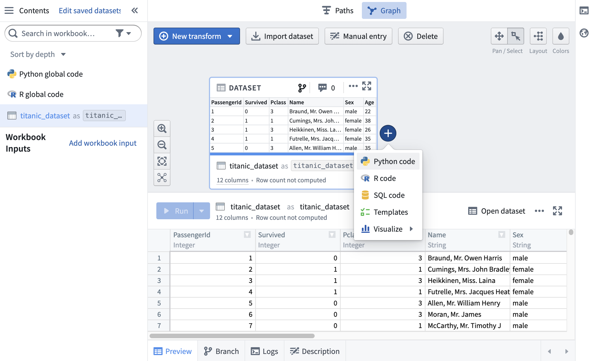

This tutorial uses a publicly-available dataset (download titanic_dataset.csv) containing information about passengers on the Titanic.
The dataset includes name, age, sex, and other identifying information about passengers on the Titanic. Navigate to Foundry and open your personal Project. Create a folder named Code Workbook Tutorial and upload the Titanic dataset there, naming it titanic_dataset.
Click the New button in the Project and select Code Workbook to create a new Workbook.
Click Import Dataset to begin. In the dialog that appears, search for titanic_dataset. Choose the file you created during the setup process, which should be in /user/Code Workbook Tutorial/titanic_dataset.
Once you have identified the desired dataset, click on the file and then click Select to add the dataset to your graph.
Now that titanic_dataset is imported into the workbook, we can transform it using code and pieces of reusable logic. Add a downstream transform by hovering over titanic_dataset and clicking the + sign. This brings up a dropdown showing various transformation options - choose Python.

A Python code node now appears on the graph, with a connecting line showing it is a child of titanic_dataset. Give this transform an alias, titanic_filtered, by clicking into the text box at the top of the logic tab.
By default, newly created transforms are not saved as datasets in Foundry. You can choose to save the results of a transform as a dataset by clicking on the Save as dataset toggle. Learn more about saving transforms as datasets. Transforms that are saved as datasets have two names: the alias, and the name of the Foundry dataset.
If you are more comfortable using Pandas syntax, you are able to use Pandas in Python nodes. Update titanic_filtered to use Pandas.
First, we need to change the input type of titanic_dataset. Click into the Inputs tab in the logic panel and expand the sidebar. You will see that the Input Type is set as Spark dataframe. Click the dropdown and select Pandas dataframe to change the input type of titanic_dataset to a Pandas dataframe.
Next, update your code to work with a Pandas dataframe, performing the same filter.
def titanic_filtered(titanic_dataset):
output_df = titanic_dataset[(titanic_dataset['Survived'] == 1) & (titanic_dataset['Sex'] == 'female')]
return output_df
This code will output a Pandas dataframe with the female Titanic survivors.
The console provides a REPL (read-evaluate-print loop) for Code Workbook, enabling rapid, ad-hoc analysis of any transform or input dataset on the graph. To allow for quick iteration in your preferred language, there is a console for each enabled language in your workbook.
Open the console, located on the right hand side of the page. Choose the Python console:
You can quickly experiment with the data by executing commands in Python. You can also send code from a transform to run in the console by highlighting the code and using the keyboard shortcut Cmd+Shift+Enter (macOS) or Ctrl+Shift+Enter (Windows).
First, you must import the following PySpark SQL functions in the Python console:
import pyspark.sql.functions as F
Then, determine the maximum age of female Titanic survivors:
titanic_filtered.select(F.max('Age')).show()
You can also use the SQL console to calculate the same statistic:
SELECT max(Age) AS max_age FROM titanic_filtered